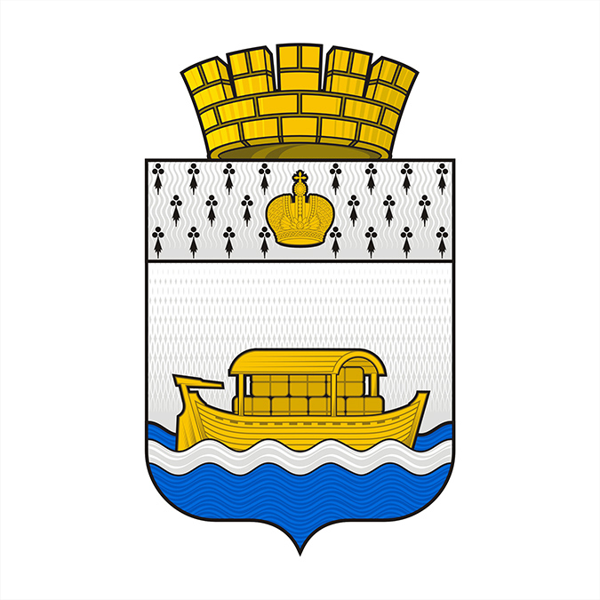

Общие сведения и история Вышнего Волочка
ВЫ́ШНИЙ ВОЛОЧЁК, город в России, в сев. части Тверской обл., центр
Вышневолоцкого р-на. Нас. 54,6 тыс. чел. (2005). Крупный культурный и
пром. центр области. Расположен на сев.-вост. окраине Валдайской воз
вышенности, на вост. берегу Вышневолоцкого водохранилища, на р. Цна.
Ж.-д. станция; через В. В. проходит автомагистраль Москва – С.-Петер бург.